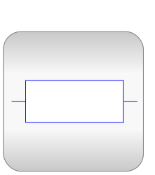

Copyright © 1998-2019, Modelica Association and contributors
| Name | Description |
|---|---|
| User's Guide | |
| Multiphase test examples | |
|  Basic | Basic components for electrical multiphase models |
| Multiphase components with idealized behaviour | |
| Blocks for multi phase systems | |
| Functions for multi phase systems | |
| Multiphase potential, voltage and current Sensors | |
| Multiphase voltage and current sources | |
| Interfaces for electrical multiphase models |